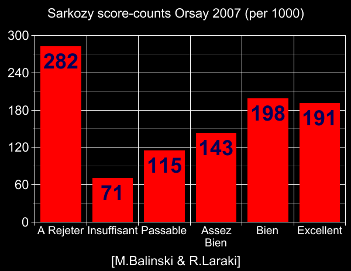

Michel Balinski and Rida Laraki, in 2006, proposed a voting method quite similar to range voting, but using median scores rather than average scores, and with an interesting tie-breaking method. They wrote a paper (pdf) about it. An updated version of this paper has now appeared in the Proceedings of the National Academy of Sciences (USA). They published a still-later paper in 2011, then finally a book
M.Balinski & R.Laraki: Majority judgment, MIT Press (Cambridge MA) 2011.
Unfortunately that book in no way used the extensive review of the matter we shall now give, which is unbiased and the best in the world; and which they were well aware of since I'd told them about it years before they wrote their book. I.e. I'm warning you that their book presents an extremely biased and incomplete (and intentionally so) 1-sided picture, and but does not tel you that it is doing so.
We also discuss B&L's study of French voters in Orsay 2007 here, and (better) we summarize a whole collection of simultaneous studies comparing many different voting systems in that same (France 2007) presidential election (of which theirs is just one), here.
B&L give an example. An improved B&L-like voting method called GMJ (it's the same as B&L's but with an apparently simpler-&-better tie-breaking procedure), was invented later by Jameson Quinn.
The idea of median-based range voting ("highest median rating") had also been considered and discussed by several members of the electorama and range voting bulletin boards during the years 1996-2007. (Even something very similar, if not exactly equivalent, to B&L's tie-breaking scheme had been proposed, although I have not been able to track that particular post down, so it may have just been in emails.)
In particular, Chris Benham published his voting method "Majority Choice Approval" (MCA) on the internet in 2004 (or before; I am not sure when Benham first did it). MCA is:
This method is equivalent to Jameson Quinn's "GMJ" method in the case where there are exactly 3 score levels. It may be that there is something especially good about the number "3" in this context. Certainly MCA works well in my Bayesian regret computer simulations. MCA can also be regarded as similar to approval voting. (The "+1" scores can be regarded as "approvals" and if anybody has >50% approval, the most-approved wins. Otherwise redefine "approval" to mean "nonnegative" and the most-approved wins.)
Here's a disturbing example created by Rob Lanphier in 1998. In this 99-voter election with 0-100 score range (four candidates A,B,C,D), B wins under the Balinski-Laraki voting method because B's median is 51 versus A's 50:
| #voters | their vote | |||
|---|---|---|---|---|
| 49 | A=100 | B=52 | C=0 | D=0 |
| 1 | A=50 | B=51 | C=100 | D=0 |
| 49 | A=49 | B=0 | C=0 | D=100 |
98 out of 99 voters strongly prefer A over B, but the single voter who slightly prefers B over A is the one that matters – B wins! Most people think that is not a good result; Lanphier considered it so disturbing that (he said at the time) median-ratings should be immediately dismissed from consideration as a voting system. In contrast, with ordinary average-based range voting A would win comfortably (A's average=74.25, B's average=26.25).
Prof. S.J. Brams indeed points out that every voter except one can strongly prefer every rival candidate over B, but median-based range voting still will elect B (Lanphier's example above, but simplified so that only A and B are in the race, shows that; and you can make example elections demonstrating Brams's claim for any number of voters and also any number of extra candidates by adding further A-like candidates).
Think Lanphier's example is contrived and artificial and wouldn't be a problem in the real world? Wrong! I contend the following (while oversimplified) is actually a fairly realistic picture of what honest voting would have been in the USA 2000 presidential election – or at least, of a of a realistic hypothetical election like it:
| #voters | their vote | ||
|---|---|---|---|
| 49 | Gore=100 | Nader=30 | Bush=0 |
| 3 | Nader=100 | Gore=20 | Bush=0 |
| 48 | Bush=100 | Gore=10 | Nader=0 |
With these votes, Nader would be the winner with median score 30. But practically every other voting system mankind ever dreamed up would elect Gore. Note that 97% of these voters strongly favor Gore over Nader; 52% favor Gore over Bush; and the average scores are Gore=54.4, Bush=48, Nader=17.7. So Median-based range not only fails to elect the clearly-right winner Gore here, it in fact elects the worst candidate.
To be clear: We are not trying to argue that Gore was actually best, nor Nader actually worst, in the actual USA 2000 election. We are simply trying to present an artificial but realistic scenario somewhat motivated by that election, in which "Gore" is best and "Nader" worst, and in which median-range misbehaves while almost every other voting system works well.
A related problem is Lomax's pizza-flavor choosing vote (0-9 score range), in which 3 friends want to buy a pizza, and one of them is a Jew who cannot eat pepperoni. All like mushroom, but the two non-Jews slightly prefer pepperoni:
| Pepperoni scores | 9 9 0 | median=9 |
|---|---|---|
| Mushroom scores | 8 8 9 | median=8 |
Another problem with median-based versus average-based range voting, is that the former is not "consistent with respect to partitioning into districts." For example (now with score-range 0-9):
| A scores | 9 8 7 4 0 | median=7 |
|---|---|---|
| B scores | 9 8 6 5 0 | median=6 |
| A scores | 9 4 3 2 0 | median=3 |
|---|---|---|
| B scores | 9 5 2 1 0 | median=2 |
| A scores | 9 9 8 7 4 4 3 2 0 0 | median=4 |
|---|---|---|
| B scores | 9 9 8 6 5 5 2 1 0 0 | median=5 |
In contrast, with average-based range voting, if A wins in both districts, then A always wins in the combined country (at least, if "blank" range-voting scores are forbidden).
Average-based range voting also has the advantage of being much simpler to describe than Balinski & Laraki's voting scheme.
Dan Bishop pointed out another problem with the median-based system: election results can change if "all zero ballots" are added. As a simple example, consider this 3-voter election (0-9 score range):
| A's scores: | 1 6 9 | median=6 |
|---|---|---|
| B's scores: | 2 5 9 | median=5 |
If an "all zero ballot" A=0, B=0 is added, then, according to Balinski & Laraki's rules, B is now the winner. Indeed, one can easily set up scenarios with N candidates (any N≥2) where adding some all-zero ballots completely reverses the finish order! In contrast, with average-based range voting provided all voters score all candidates, adding an all-zero ballot (or for that matter, any number of ballots which all score all candidates equally) never changes the winner and never changes the finish order.
(This property would enable an interesting new kind of election fraud...:) Actually, in Balinski & Laraki's own polling experiment in France's 2007 presidential election, they instructed their voters that if they left any candidates unscored, they would regard those as zero (minimum) score. Hence by B&L's own rules, if a voter did not show up at the polls to vote, A would win. If however that voter did vote in some of the races on ballot, but in this particular A-versus-B race left both candidates unscored, then B would win.
Another issue, related to some of the above, pointed out by Manzoor A. Zahid in 2009, is this.
| Candidate | Excellent | VeryGood | Good | Mediocre | Poor | Unacceptable |
|---|---|---|---|---|---|---|
| A | 9% | 41 | 50 | 0 | 0 | 0 |
| B | 4 | 47 | 3 | 5 | 12 | 29 |
B wins according to Majority Judgment ("very good"), but A is rated "good" or better by every voter, while B has a two-peaked distribution with many voters considering him unacceptable. Zahid similarly criticizes these elections (B wins according to Majority Judgment in both):
| Candidate | Excellent | VeryGood | Good | Mediocre | Poor | Unacceptable |
|---|---|---|---|---|---|---|
| A | 1% | 98 | 1 | 0 | 0 | 0 |
| B | 50 | 1 | 0 | 0 | 0 | 49 |
| Candidate | Excellent | VeryGood | Good | Mediocre | Poor | Unacceptable |
|---|---|---|---|---|---|---|
| A | 50% | 0 | 0 | 0 | 0 | 50 |
| B | 0 | 0 | 0 | 0 | 51 | 49 |
Average-based range voting also outperforms median-based in graphical comparisons, in computer measurements of Bayesian regret, and in the eyes of the world's most experienced(?) election-practitioners, honeybees. Also, range voting has been used for decades by academic graders, whom I do not think would be willing to switch to medians.
Average-based range voting generalizes to a multiwinner proportional representation voting system called reweighted range voting. (See papers 78 and 91 here.) But there currently is no known way to generalize median-based range voting to do that (or if there is, it is very complicated).
Average-based range voting is readily adapted to the case where voters have different "weights," e.g. type-A voters have 54+π votes whereas type-B voters have only 1 vote each. (Simply multiply the type-A votes by 54+π...) With median-based range voting it is a good deal harder to handle that.
An extremely bothering problem with median-based range voting is its failure of "participation." Consider this situation:
| A's scores: | 9 6 5 3 0 | median=5 |
|---|---|---|
| B's scores: | 9 7 4 2 0 | median=4 |
| C's scores: | 9 4 3 2 0 | median=3 |
Now suppose you and your spouse (new voters) come. Your votes are both: A=9, B=7, C=0, preferring the current winner A over every opponent. These votes cause A to lose, because the new election is now
| A's scores: | 9 9 9 6 5 3 0 | median=6 |
|---|---|---|
| B's scores: | 9 7 7 7 4 2 0 | median=7 |
| C's scores: | 9 4 3 2 0 0 0 | median=2 |
In short, you and your spouse's decision to vote honestly, made the election result worse from your point of view. You would have been better off not voting at all ("no-show paradox"). In contrast, with average-based range voting, no-show paradoxes can never occur provided there are no blank (no opinion) votes. They can occur if blanks are allowed and are discarded before averaging. E.g. A scores: 9 0 and four blanks, avg = 4.5; B scores: 5 5 5 5 5 5, avg = 5; B wins; but you now add your vote A=8, B=9. That raises A's average to 17/3=5.667 and B's to 39/7=5.571 so now A wins; this example is valid if there is no quorum rule.
Balinski & Laraki pointed out the following enjoyable property of median-ratings (which had earlier been stated, albeit somewhat more clumsily worded, by electorama posters including Bart Ingles in 1999):
MAJORITY THEOREM (Bart Ingles, then M.Balinski & R.Laraki): With median-rating, the winner W has the property that a majority of voters unanimously rates him ≥M, while no majority unanimously rates any opponent ≥M.
In contrast, average-based range voting does not enjoy that property, and indeed both average- and median-based range voting fail the traditional definition of the "Condorcet property." But both average-based and median-based range voting obey a nontraditional definition of that property and both, under reasonable assumptions about the behavior of strategic voters, will elect a Condorcet winner whenever one exists.
However, Ingles' theorem is not as nice as it sounds. Here's an example (0-9 score range, three candidates):
| A's scores: | 0 4 6 9 | median=4 |
|---|---|---|
| B's scores: | 0 3 7 9 | median=3 |
| C's scores: | 0 3 8 9 | median=3 |
As assured by the theorem, a majority of voters unanimously agree that A≥4, whereas no voter-majority unanimously agrees that B≥4 (or that C≥4). Sounds great at first, but... it is also true that a voter-majority unanimously agrees that A≤6, whereas no voter-majority unanimously agrees that B≤6 (or that C≤6). So by the same logic Balinski & Laraki used to conclude A was the best, we can conclude A is the worst! So it seems as though Balinski & Laraki's logic is self-contradictory. (About reversal failure; average-based range never suffers that.) Personally, in this situation I would prefer to elect C, not A, but that is just my opinion.
Steve Unger also points out the following example which also shows that Ingles' theorem is not as nice as it sounds and makes medians look bad (and the median-based result is bad, in the view of a 78% supermajority of the voters):
|
| |||||||||||||||||
Unger's example has been criticized because the last 2 voters provided "non-normalized" ballots in which they did not employ the full 0-4 score range. If you do not like that, then change those two votes to become "A=0 B=4 C=1" in which case:
Finally, Balinski & Laraki's median-based scheme is more complicated than mean-based range voting.
A typical "tyranny of majority" scenario (which I'm told is rude to discuss) is the "kill the Jews" vote. That is, there is a majority of non-Jews, and a minority of Jews, and they all vote on the question "should the Jews be killed and their money stolen and used to reduce taxes for the survivors?"
The same abstract type of scenario arises (fortunately usually in less dramatic form) all the time, e.g. many "ban gay marriage" referenda passed in USA states in 2008, and on 30 March 1855 a Kansas-wide referendum voted to make slavery legal.
In such votes some proposal has a very bad effect on the minority, but a slightly good effect on the majority, of people. The badness can (and did in the case of the Jews!) outweigh the goodness. It is an unfortunate fact that most voting methods will, with honest voting (where by "honest" we mean: each voter honestly says which choice would have the best effect on her alone) kill the Jews.
Ordinary (average-based) range voting is one of the few voting methods that is capable of going against the will of the majority. This happens only if the minority expresses their preferences strongly enough while the majority expresses their views weakly (both moves are honest). It could mean that range voting would save the Jews while almost every other voting method would kill them. (It is a fact – observed in every large range vote that I have ever seen – that a large fraction of voters do not choose to exaggerate all their scores to max and min.) This in my view is a considerable advantage for range voting versus almost every rival voting method.
Which brings us to our point: Median-based range voting seems to be more vulnerable to tyranny of majority than average-based range voting. Specifically, imagine with range 0-to-9, that there are exactly two kinds of votes: strong-preference votes "kill=0, live=9" (cast by honest Jews) and weak-preference votes "kill=5, live=4" cast by honest non-Jews. In such a scenario, if the Jews exceed 10% of the population, average based range voting will let them live. However, median-based range voting will always kill the Jews, no matter what percentage they are (provided they are a minority) and no matter what the particular four numerical scores (here 0, 9, 4, and 5) are.
It appears from poll data that average based range voting is enactable by referendum, while MJ is not (probably due to its greater complexity).
GMJ was suggested by Jameson Quinn as an improvement/simplification over Balinski & Laraki's original Majority Judgment method. It also can be regarded as a continuous-time version of "Bucklin voting" (as improved so that equal and/or omitted ranks are allowed). It works as follows:
If a candidate has V votes with Δ to be added at the next grade, then the value of t causing the 50% threshhold H to be hit, is t=(H-V)/Δ. The winning candidate is the one with the least such t, among t with 0<t≤1.
If each iteration of the loop (steps 3 & 4) is regarded as consuming 1 "time unit" then the "total time" before each candidate reaches 50% can be regarded as a measure of how good that candidate is, and used to order all the candidates (not merely to choose a winner).
A natural name for this voting system would have been "first past the post," except that that phrase was already stupidly employed to describe plurality voting. ("Stupidly" because with plurality voting there is no "post" and there is no "time" scale to use to reckon "first.")
Balinski & Laraki's proposal has a lot in common with ordinary mean-based range voting, but relatively speaking suffers numerous disadvantages. I cannot currently see how it can have enough relative advantages to compensate for that.
Hence I recommend ordinary range voting.
However... there are more arguments to be considered; see below.
The 6 Feb. 2009 "Numbers Guy" column in the Wall Street Journal ("And the Oscar Goes to...Not Its Voting System") contained
| Prof. Balinski... calls (mean-based) range voting a "ridiculous method," because it can be manipulated by strategic voters. |
Balinski & Laraki's PNAS-USA paper contains a lot of theorems aimed at justifying or formalizing the notion that median-based range voting is somehow "optimal" in the sense that it is "least vulnerable to manipulation by strategic voters."
We shall now re-examine that. I personally think that Balinski & Laraki's "optimality" and "vulnerability to strategy" definitions were contrived – with other (but seemingly at least as reasonable) definitions, their theorems utterly fail. Furthermore, even to the extent they are correct, their results may have little impact in the real world – because, e.g. even if a voting method often offers only half the incentive to strategize, then so what – maybe exactly the same voters will strategize anyhow! (B&L offered no evidence to the contrary and indeed the evidence they themselves found in the France 2007 election seems to support my view – their voters employed plenty of strategy!)
However, B&L's work is not completely valueless. As our examination will show, there are circumstances under which median-based range voting should outperform mean-based range; and we shall develop understanding of just what circumstances favor median and which favor mean.
There is a family of voting systems intermediate between mean- and median-based range voting: trimmed mean range voting. That is: with trimming-fraction T, 0≤T<50%, you discard the top T percent of Reagan's scores, also discard the bottom T percent, and then Reagan's final "trimmed mean" score is the mean of his undiscarded scores. The candidate with the highest trimmed mean wins. In this view,
A natural question is: what is the best value of the "trim-off parameter" T? Is it T=0, T→50%, or somewhere in between?
Balinski & Laraki's point seems to be that for a substantial class of voters, there is zero incentive in median-based range voting to score somebody dishonestly:
ZERO-INCENTIVE THEOREM: exaggerating candidate-X's score in your median-based range vote, will never help you move X's societal-median score toward what you consider to be a more-correct value than the unmanipulated value it had with your honest score-vote.
That sounds good at first, but the more you think about it, the less this "non-incentivation of strategy" really seems to matter.
Let's examine the situation. Suppose the societal median score for Gore is 6 and for Bush is 5 and the score-range is 0-to-9. Then:
| You have zero incentive to strategize (since Bush & Gore's societal median scores will remain unchanged even if you exaggerate all the way like Bush=0, Gore=9 or the reverse) if... | You do have incentive to strategize by exaggerating-to-the-max if... |
|
|
Considering the cases, in a tight 2-way race with median-based range voting about 50% of the voters have zero incentive to strategize and 50% have incentive.
B&L seem to think that therefore, there will be lots of honest voting. However a different way to look at it is: no voter in this median-based range voting Bush-Gore scenario is hurt by strategizing, but 50% of them are hurt by not strategizing. And it cannot be entirely clear a priori to any voter which kind she is.
Furthermore, that was only thinking about the effect of one voter altering her vote in isolation. If many voters do so, their effects synergize to move the median, which means that somebody who "has no incentive" actually would have incentive once the other strategizers (those who originally had incentive) get done moving it. The more it moves, the more voters have incentive to move it. E.g, consider the situation when the societal median scores have moved to Gore=8.6 and Bush=0.4, and then you as a typical slightly Gore-favoring voter, would then have incentive to exaggerate your scores to 9 and 0 to increase Gore's win even more, even if originally you had no incentive because originally your vote-alteration could not have altered Bush's and Gore's medians. So really, more than 50% of the voters have incentive, and this keeps snowballing until 100% of the Gore>Bush voters will be incentivezed to strategize and the medians move all the way to 9 and 0.
So in view of the synergization and/or the incomplete knowledge effects, everybody would want to strategize, i.e. vote dishonestly – exactly the opposite of B&L's goal!
Oops.
Here's another serious problem. Remember, a big (for some people "the whole" – see the Balinski "ridiculous" quote above) motivating idea behind median-based instead of average-based range voting was to get more immunity to "one-sided" strategy, e.g. strategy by the Bush>Gore voters which is not countered by the Gore>Bush voters. [They had been satisfied with plain average-based range voting in the case where there was both strategy and counterstrategy. The great fear of these critics was unbalanced 1-sided strategy.]
In all my Bayesian Regret studies up to early 2009, mean-based range voting outperformed median-based with any strategic+honest voter mix, but all those studies involved voters who independently "flipped a probability=p coin" to decide whether to be honest or strategic. In other words, their decision to be strategic was unrelated to their politics. I could have, but did not, try to have voters whose p-values were correlated with their politics. We're now going to consider the maximum-bias situation of that sort. But actually the old simulations, since they usually were about elections with ≤200 voters, usually already had fairly large strategy-1-sideness bias just from the random voter decisions.
But: does median actually work to solve the 1-sided strategy problem? Let's work out a simple scenario, using altogether too much math.
The simple model: Suppose each voter has honest score for each candidate that is an independent random-uniform real number in [0,1].
That implies there are 50% Bush>Gore, and 50% Gore>Bush, voters. The Gore>Bush voters have a triangular probability density of Gore scores: ProbDensity(x)=2x, with mean score 2/3 for Gore and mean=1/3 for Bush. The Bush>Gore voters have the same triangular probability density of Bush scores and mean score 2/3 for Bush and mean=1/3 for Gore. Now suppose a fraction F, 0≤F≤1, of the Bush>Gore voters exaggerate to Bush=1, Gore=0. We'll assume there is no counterstrategy by the Gore>Bush voters – they just stay honest.
What is the effect on Gore & Bush's final scores?
| With median-based range voting: |
|---|
If F=0 (no exagg): Gore=0.5, Bush=0.5. General-F exagg: Gore=([F-1]+[1-F]1/2)/F, Bush=(1-[1-F]1/2)/F. If F=1 (max exagg): Gore=0, Bush=1. |
| With average-based range voting: |
If F=0 (no exagg): Gore=0.5, Bush=0.5. General-F exagg: Gore=(3-F)/6, Bush=(3+F)/6. If F=1 (max exagg): Gore=1/3≈0.3333, Bush=2/3≈0.6667. |
SCORE-DISTORTION THEOREM: Median-based range voting always causes more score-distortion than average-based (under this scenario with 1-sided strategy) if 0.464102≤F≤1. Median causes less distortion if 0<F≤0.464101, but the two distortions in this domain are very close, see graph. I.e.
for every F with 0.464102≤F≤1,
while in the range 0≤F≤0.464101 the maximum difference Δ between
PROOF: The formulas are worked out as follows. You note that there are three kinds A,B,C of voters, present in proportions
who respectively rate Gore=0, Gore=honest, and Gore=honest. The type B∪C voters (combined set) have a trapezoidal probability density of scores with the two trapezoid leg-heights being (1-F) and 1 (up to a constant multiplicative scaling factor you need to choose to make the total probability-mass be 1, i.e. "normalized") at the Gore=0 and Gore=1 sides respectively. Gore's median score is then m where
This simplifies to
a quadratic equation with solution
(note the integrals in the denominators are just there to provide the right normalization-constant for the trapezoidal probability density). This simplifies to
Now if we solve the "crossover" equation
i.e. solve
for F, we find that the only real solution is F=2√3-3=0.4641...
Details: 6(1-F)1/2/F = 3-F - 6(F-1)/F 6(1-F)1/2 = (3-F)F - 6(F-1) 6(1-F)1/2 = 6-3F-F2. 36(1-F) = (6-3F-F2)2 F4 + 6F3 - 3F2 = 0 roots of this quartic are F=0±0 and F=-3±2√3 i.e. F=0, F=0, F≈0.4641, and F≈-6.4641.In other words, median is less distorted than average when 0<F<0.4641..., but average is less distorted when 0.4641...<F≤1. The two are equally affected when either F=0 or F≈0.4641.
Q.E.D. We thank Jameson Quinn finding an error in our old proof, now fixed.
In view of this, the underlying motivation that medians save us from 1-sided strategy, or that it reduces the distortionary effect of strategy by about a factor of 6, or 2... all are seen to be bogus. The reality (at least in this simple model) is: average-based range is more resistant to strategy than median-based, entirely contrary to my original (and Balinski & Laraki's) intuition!!
And I think it is obvious average-based is better with 100% honest voters and with mixtures of honest and (2-sided) strategic voters – and in case it isn't obvious, the Bayesian Regret simulations indicate that.
In the scenario above if a fraction-F of all voters exaggerate (now independent of their politics, i.e. no longer 1-sided) then we get average=median=0.5 for both Bush & Gore, i.e. the 2-sided strategizing & counterstrategizing exactly canceled out in both systems.
So this has been just one simple model, but as far as it goes it indicates
A criticism of the above simple 1-sided strategy model, raised by Jameson Quinn, is this: it models all Bush>Gore voters as equally likely to decide to strategically exaggerate. It might be more realistic to assume that the voters with greater Bush-Gore honest score difference, are more likely to exaggerate. Of course, this would directly contradict Balinski & Laraki's theorem above; B&L's point was that those voters supposedly are exactly the ones with "zero incentive" to exaggerate! But we plunge onward anyhow. Jameson Quinn (and/or me) mooted several possible ways to put this effect into the model, but they all have problems:
After negotiations with chief gadfly Jameson Quinn, he invented, and W.D.Smith analysed, a more general model of 1-sided strategizing. Actually it is a 1-parameter family of models. The model above is a mere special case of the more general model. Oddly enough, it turns out that the above special case happens to make average-based range voting seem to have good (compared to median-based) resistance to 1-sided strategy; whereas the whole rest of the parameter space says median-based has exactly twice the resistance to 1-sided strategy, versus average-based range voting!! (Albeit the special case seems of especial importance compared to most instances of the general case.) See that analysis on a separate web-page.
A lot of people are paranoid that the Evil Other Faction will think of the idea of exaggerating Bush>Gore scores to the max, while your Nice Kind Faction would never think of exaggerating Gore>Bush scores. Result: horrors! disaster! Evil wins!
But, in reality, is this fear plausible? Can anybody seriously imagine a vast conspiracy will be organized on just one side to do this, with the other side never noticing and never doing anything about it? Even though the whole idea is incredibly obvious?
There have been thousands of large range voting style polls conducted, and entire major governments (Sparta, Venice) have been run with range voting for hundreds of years. So far, in all that data, I have never seen any example of 1-sided strategizing. [E.g. in the Bush vs Kerry US presidential election of 2004, our range exit-poll study found no detectable difference in the fractions of pro-Bush and pro-Gore strategizers.] I challenge the worriers to find such an example. Balinski & Laraki published an entire book on this in 2011, but were unable to include even a single historical example election or poll featuring 1-sided strategy! Finally in 2015 I participated in a actual polling study in which massive strategy did occur... and in that study, Balinski & Laraki's "more resistant" method malfunctioned far worse than plain average-based score voting.
If all factions maximally exaggerated (using either average-based, or median-based, range voting) then we'd get approval voting.
When we actually look at real-world data from humans using average-based
and median-based range voting, what do we find? In all the cases I am
aware of so far, the voting seems similar and the election outcomes seem
similar. For example, in B&L's
own data set of 1752 voters from France 2007
there obviously was a huge amount of strategic voting going on since
by far the most popular score was "zero" – which also is exactly what
happened in every (average-based) range voting study I am aware of, including our own, see e.g.
/Beaumont.html,
/RangePolls.html,
/PsEl04.html,
/French2007studies.html,
/France2012.html.
So claims the voters will not feel incentivized to exaggerate, were simply wrong in real life.
On the other hand, there also was a lot of honesty going on since intermediate scores were very popular. Which also is exactly what happened in every average-based range voting study I am aware of, including our own. The same finish-order 1.Bayrou, 2.Royal, 3.Sarkozy, happened with both median-based and average-based 6-level range voting in Orsay France 2007... except when Balinski & Laraki corrected their ballots for geographic biases (their votes came only from Orsay, not all France) it appears that Sarkozy wins (which was clearly worse).
So, while I admit this has not been a maximally-careful examination of election data, I fail to see any noticeable difference in voter behavior with median- versus mean-based range voting – or to the extent there was one, MJ was, in Balinski & Laraki's own France-2007 study, worse for France! Also in an apparently very large majority of real-world cases it seems both procedures elect the same winner.
Median should enjoy clear relative advantages over average in situations where the honest voter-opinions are sharply peaked.
Median-Favoring Example: Suppose the honest scores for each candidate are sharply peaked distributions, e.g. almost all Gore scores are near 61, almost all Bush scores are near 55, etc, on an 0-99 scale. (Say, to be concrete, almost all honest Gore scores are within 61±2 and Bush scores within 55±2.) Further, suppose a goodly chunk of the voters (e.g. 25%) decide to try to throw the election by strategically exaggerating their opinions of Bush and Gore to 99 and 0 respectively. Note we are supposing all this exaggerating is entirely one way favoring Bush.
I suspect both these suppositions are unrealistic. However, one could imagine them. Median-based range voting then would still give Bush about 56 and Gore about 60, i.e. would be almost entirely immune to this strategic conspiracy, but mean-based range voting would succumb to it and elect Bush.
But if these 25% of "99 & 0" voters were not "dishonest" but in fact were expressing their honest opinions (for example, say the 25% are Jews and Gore has an evil plan to kill all Jews, so the honest scores really do form a 2-peaked distribution), then median-based range voting would here be making a big mistake!
More generally, whenever there is a 2-peaked score-distribution for some candidate, median is going to pay essentially no attention to the sizes of the two peaks (also will ignore the location of at least one of them) and hence will often output a pretty crazy judgment.
Figure-skating judging is an environment where these advantages-for-median (or for "trimmed mean" range voting) seem present. But it does not look to me like large political elections enjoy these median-favoring features (at least, not usually). Also some have raised a moral objection to MJ and Trimmed Mean, which is that it is "unfair" that they ignore minorities of extreme voters. The moralists say that while that can be ok for figure-skating judging (ignore corrupt unprofessional judges) but for democracy ignoring minorities is an outrage. ("Sorry Green Party, you are outliers so we're going to ignore you.")
For example, in Balinski & Laraki's own MJ vote data in France 2007, none of the candidates had tightly bunched score-distribution, and Sarkozy (the MJ winner according to Balinski & Laraki's extrapolation to all France) had a strongly two-peaked distribution (peaks at 0 and 4 on 0-5 scale). Thus exactly this problem happened in Balinski & Laraki's own experiment (a fact they did not notice)! – Sarkozy won with MJ, but the democratically-correct winner should have been Bayrou. (Both rank-order and 33 pairwise polls all unanimously and indisputably show Bayrou would have defeated Sarkozy in a two-candidate simple majority vote, indeed would have defeated any rival X in a Bayrou-versus-X vote; also Bayrou won with approval voting, {0,1,2} score voting, and {0,1,2,3,4,5} score voting; and finally in retrospect later polls showed France wished Bayrou had won, e.g. near the end of Sarkozy's term France preferred Bayrou>Sarkozy by landslide 56-35 margin pairwise.)
|  |
So this two-peakedness problem happened in Balinski & Laraki's own MJ study and caused its failure.
It is an empirical fact that real-world range voters (with either median- or average-based range voting) award the score 0 (zero) far more often than any other score. (Obviously, this is strategic.) Hence it might happen reasonably frequently that every candidate gets a majority of zero scores. For example in the French 2002 presidential election (oddly enough, the election immediately prior to the one Balinski & Laraki studied) every one of the 16 candidates was "disapproved" by at least 63% of the voters (if given a choice "approve" or "disapprove") and most by far more (80.3% overall disapproval rate).
The 2007 one that Balinski & Laraki studied also featured majority-disapproval for every candidate.
Suppose this "unhappy with all choices" scenario happens. When it does, every candidate's median score will be exactly zero. (In contrast: Their average scores will generally be distinct nonzero values, so for average everything will be fine.) Hence Balinski & Laraki's tiebreaking procedure will be invoked. It will elect the candidate with the fewest 0s, which resembles antiPlurality voting. AntiPlurality is a well known exceedingly bad voting system.
Actually, that was not a great description of the situation, so let me clarify. In our "for each candidate, more than half the voters give him min-score" scenario (so every candidate has median score = min-possible score), what determines who wins in MJ? Answer: The tiebreak rule, which is how many voters burn each candidate with min-score – the one with the fewest burns wins. That would be exactly antiPlurality voting ("candidate named by fewest voters wins") except that in antiPlurality each voter is allowed to name only one candidate, while in our scenario, a voter can burn any number of candidates provided it's more than half of them on average. So really this is more like "antiApproval voting." The real fear I have with this scenario is that the non-burn (i.e. scores that are actually informational) votes are completely ignored by MJ in this scenario – doesn't matter what values they had. So you could say here MJ acted like approval (which is technically equivalent to antiApproval) voting, but it's really more like "approval voting with special major-deception features added" since the poor voters will think their non-minimal scores are the things that matter, but that perception would be exactly wrong. They will think "if I move Hitler up from a 0 to 1 that won't help him nearly as much as moving him to 9," but they'd be wrong.
In this situation, any version of MJ will simply elect the candidate with the most non-bottom votes, regardless of the grade of those votes. A candidate with 40% Ds and 60% Fs will beat a candidate with 30% As and 70% Fs. The results of such an election might be largely random, or at least hard to defend as legitimate.
It is unclear how frequent and severe this pathology will be in real life. Balinski & Laraki only looked at one single election (where it didn't happen). There then was a France-wide MJ poll by OpinionWay, a French polling firm, 1 year in advance of the France 2012 presidential election. (1000 respondents, telephone; 12 "candidates," 7 score levels.) In this poll, it appears that a weakened and partial version of the "unhappy with all" pathology did occur. Specifically, MJ yielded essentially the same results as average-based range voting, except for rightist candidate Marine Le Pen, for whom a large discrepancy occurred.
| MJ-Rank | Candidate | % rating above MJ | "Majority Judgment" | % rating below MJ | Score-counts (best→worst) | Average |
|---|---|---|---|---|---|---|
| 1 | M. Aubry* | 38.0 | Assez Bien - | 49.3 | 82, 129, 170, 126, 196, 114, 184 | 2.70 |
| 2 | J-L. Borloo* | 46.0 | Passable + | 34.4 | 22, 62, 153, 223, 196, 159, 185 | 2.27 |
| 3 | D.d. Villepin* | 40.1 | Passable + | 39.3 | 20, 58, 119, 204, 207, 174, 219 | 2.08 |
| 4 | F. Bayrou | 37.9 | Passable - | 35.9 | 12, 47, 128, 192, 261, 166, 193 | 2.09 |
| 5 | E. Joly | 29.9 | Passable - | 49.8 | 32, 47, 74, 145, 203, 190, 309 | 1.75 |
| 6 | N. Sarkozy | 46.9 | Insuffisant + | 41.3 | 41, 87, 111, 95, 135, 118, 413 | 1.80 |
| 7 | JP.Chevenement* | 43.1 | Insuffisant + | 32.2 | 5, 11, 58, 129, 228, 247, 322 | 1.41 |
| 8 | J-L. Melenchon | 36.8 | Insuffisant - | 41.8 | 13, 27, 50, 112, 165, 214, 418 | 1.29 |
| 9 | O. Besancenot* | 35.4 | Insuffisant - | 44.2 | 8, 17, 69, 99, 161, 204, 442 | 1.23 |
| 10 | N.Dupont-Aignan | 25.5 | Insuffisant - | 46.7 | 5, 14, 27, 70, 139, 277, 467 | 0.97 |
| 11 | N. Arthaud | 25.8 | Insuffisant - | 48.0 | 1, 9, 34, 77, 137, 261, 480 | 0.95 |
| 12 | M. Le Pen | 44.4 | A Rejeter - | 0 | 68, 65, 70, 72, 78, 93, 556 | 1.48 |
Specifically, MJ ranked Le Pen dead last, while average-score claimed she finished 7th of the 12.
What caused this discrepancy? And which system was better? At least naively, MJ appears to have "judged" Le Pen wrongly while average judged her more correctly. The reason I say that was, MJ's main claim to superiority over average is its superior resistance to "1-sided strategy." The reason average gave Le Pen a much higher place, was because she had a substantial number of supporters who rated her all along the scale (including "excellent"). MJ dismissed all of them as "exaggerating strategists," paying attention only to the fact a majority of voters gave Le Pen the worst possible score "A rejeter." But that was wrong – those Le Pen supporters were not "exaggerating." They were being "honest." How do we know that? Because
(Indeed, if anything, the anti Le Pen faction was the one exaggerating.) So average, correctly (in this case) regarding those Le Pen scores as "honest," gave her credit for them and boosted her into 7th place, while MJ wrongly ignored all those scores and rated her with the min-possible score. This is precisely the sort of undemocratic behavior ("ignore outlier minority groups such as Rightists, Jews, Greens") critics of MJ feared. But this would be good for eliminating bribed figure skating judges as outliers in the Olympics.
In what (weakened) sense is this an instance of the present section's "unhappy with all" pathology? Restrict attention to the bottom half of the field of 12 candidates (which was where the discrepancy occurred – and it was a very severe one, changing Le Pen from top to bottom among these 6). Then all 6 of them were rated "A rejeter" by a large chunk of the voters. (Only for Le Pen was that chunk actually over 50%, so this is only an approximate and weaker version of our proposed pathology.) As a result, MJ ignored all the reasonably decent scores that all of these candidates received, paying attention only to how many "A rejeter" and "Insuffisant" scores they got. But that usually worked out ok (!) because all these candidates had very similarly shaped score-distributions, so just looking at one point of the distribution was good enough for comparison purposes, so MJ produced essentially the same ordering as average. The exception was Le Pen, whose distribution was shaped quite differently than the other five. (pictures) And that was the reason for the discrepancy. Note that this kind of effect could have perturbed anybody in any direction, depending on the shape of the parts of their score distributions that MJ ignored. In our particular case it only moved Le Pen (from top to bottom of the 6) because only her distribution was differently shaped (e.g. largely flat with peaks at the two ends). But if you look at the score-distributions for the top 6 candidates you will see that a large variety of shapes occur, e.g. Aubry has three large peaks, (Sarkozy also has three peaks) etc.
How many score levels? If we used a continuum-infinite score scale instead of Balinski & Laraki's 6-point scale, this whole problem might get even worse because Caligula could win with 55% scoring him 0 and the next 45% scoring him 0.0001, while meanwhile Jospin loses with 60% 0-scores and 40% 100-scores – and the reason is entirely the single first 0.0001 score (which in B&L's system counts the same as score 97, in this scenario). This suggests that, unlike for average-based range voting, making the scale finer-grained might make B&L's median-based voting behave substantially worse, and suggests for Balinski & Laraki it may matter quite a lot exactly how many score levels there are.
What is the optimum number? (An important question Balinski & Laraki did not address.) Might it be three?
The idea in this section is due in substantial part to Jameson Quinn, and might be very important.
Suppose there is a 3-way race between candidates X, Y, and Z where Y is similar to Z. Suppose the voters who favor Y and Z outnumber those who favor X. With approval voting, Y or Z would win provided the Y-or-Z-favoring voters approve both (while disapproving X) outnumbering the X-approving voters (who disapprove Y & Z). The trouble is that members of the former faction favor Y>Z or Z>Y slightly. They would be tempted, to prevent the "wrong" member of {Y,Z} from winning, to strategically disapprove him. If enough did so, then X would win, a disaster.
This has been called the "Burr dilemma," albeit a perhaps better name is the "chicken dilemma." If there were good pre-election polling indicating its likelihood, then the Y+Z faction would recognize the problem and could try to compensate with more double-approval voting. (Another issue would be that if those polls showed X losing, then the X-faction would be tempted to approve the less-bad among {Y,Z} also.)
Now it was suggested that (average-based) score voting could alleviate this problem because it would give the Y+Z faction the option of voting "X=0, Y=70, Z=100" on an 0-100 scale, thus "more safely and honestly" indicating their Z>Y preference. But this is not a total cure. We can easily envision a situation such as (using 0-9 score voting)
| #voters | their vote |
|---|---|
| 26 | X=0 Y=7 Z=9 (but honestly Y=8) |
| 26 | X=0 Y=9 Z=7 (but honestly Z=8) |
| 48 | X=9 Y=0 Z=0 |
in which X wins, but really Y or Z should have won because the honest scores would have given them average=4.42. In other words, the Burr dilemma can still hurt average-based range voting, even with voters who only partially downgrade the "worst member of the good pair."
But in this situation, MJ would have concluded that the median scores were X=0, Y=Z=7 (win) and hence would not have been hurt by the "Burr dilemma." So it may well be that in the presence of
that median-based approaches will outperform average-based ones! Warren D. Smith's old (2012 and before) Bayesian Regret computer election simulations had only considered honest+strategic voter mixtures as in (c) where each voter flipped a constant-bias coin to decide which type to be, and hence presumably had not experienced this Burr-effect, which happens with voter behavior (b), which has non-equivalent effect for MJ voting (although equivalent for average-based score voting). Indeed the "flaw" in MJ voting pointed out earlier about partitioning into districts here instead plays a beneficial role!
It would therefore be highly interesting to redo that simulation work, but this time incorporating such internally-mixed voters (we'd need first to figure out how such voters behave). Then we could quantitatively assess how much this Burr effect matters and whether it is enough to swing Bayesian Regret's judgment to favor medians.
The presidential straw poll at the 2015 Republican Liberty Caucus was the only known real-world poll ever conducted with ratings ballots known to feature massive organized strategic voting conspiracies.
Unfortunately for Balinski & Laraki's theoretically based hopes that MJ would defend well against strategic voters by comparison with plain average score... actually, the opposite happened: MJ was completely destroyed by the strategic-voting conspiracy while it was plain average that defended itself fairly well.
Suppose all (or enough) voters decide that A and B are the two "major party" candidates and exaggerate to score A=max and B=min (or the reverse) in a naive attempt to "increase the impact" of their vote. This with some voting systems such as plain plurality, Condorcet (with strict rank-orderings as votes) and instant runoff (IRV) forces either A or B always to win ("self-fulfilling prophecy"). A "third party" candidate C can never win with this voter behavior (unless there is a perfect tie, but we shall regard that as neglectibly unlikely).
This is in my opinion (and oversimplifying) the reason that IRV and Plurality and (presumably also?) Condorcet systems lead to self-perpetuating 2-party domination (2PD). With 2PD, the democratic "marketplace" is severely shrunk and the fact we are using voting systems more advanced than plain plurality becomes largely irrelevant. This is a disaster. And you need to keep in mind that his kind of naive-AB-exaggeration behavior is very common, occurring for about 85% of Australia's voters.
Now with this voter behavior, even by 100% of all voters, it still remains entirely possible for a third-party candidate to win under either approval, or average-based range, voting. Thus there is hope that range voting will enable avoiding the 2PD trap. (There is some, but less, such hope with approval voting.)
But with median-based range voting, this voter behavior causes one of the two major-party candidates to always get median=max score. Thus the only way a third-party candidate can win, is if his median also equals the maximum possible score. This intuitively seems unlikely compared to the condition (average>51 using 0-100 scale) for a third-party candidate to win with average-based range voting in this kind of scenario.
So it seems plausible that Balinski-Laraki voting will still fall into the 2PD democracy-destroying trap.
| Favors Median | Favors Mean |
|---|---|
|
Honest scores for each candidate tend to be "sharply peaked" – almost all scores near some numerical value (the value depends on the candidate) |
Honest scores for each candidate vary over a broad range or form a two-or-more-peaked distribution |
|
There are just two kinds of voters: "honest" and "strategic." [But this table-line made sense before the Burr dilemma effect above was discovered. Now we know about it, that could reverse this table-line!!] |
There are a continuum of kinds of voters – each varies between wholy honest to wholy strategic and can lie anywhere in between; and there is no simple way to classify voters into just two ("honest" vs "not") pigeonholes. |
|
In the more general 1-parameter model, median exhibits twice the resistance to 1-sided strategic voting... |
...while average exhibits half the resistance. [But I am currently not aware of any evidence that 1-sided strategy actually exists in the real world in large elections.] |
|
May be vulnerable to self-perpetuating "2-party domination" trap caused as indirect effect of voter strategizing over many consecutive elections. |
With 2 "major parties" plus "minor" parties (who try to become more major) mean-based score voting may be able to avoid 2-party domination trap. |
I suspect these median-favoring conditions hold substantially better for skating-judging than for large political elections. (And even then, trimmed mean probably is superior.) However, it would be better if this "suspicion" and limited evidence could be replaced by a much greater amount of more-solid evidence. Our range-voting exit poll study of the 2004 USA presidential election sought but found no evidence Kerry and Bush supporters differed in how strategic they were.
Ordinary range voting is better than Balinski-Laraki for (a) honest voters, or for (b) strategizing and counterstrategizing voters, or for any mixture of (a) and (b). However for voters who each internally mix honesty with strategy, Balinski-Laraki could outperform average-based range voting due to Burr dilemma effect. A simple model makes it appear that 1-sided strategy distorts Balinski & Laraki's system more than it distorts ordinary range voting (contrary to Balinski & my own naive intuition); see graph above – but a more general class of models reach the opposite conclusion.